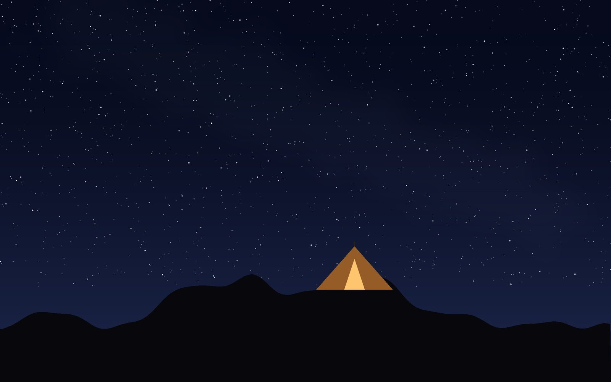
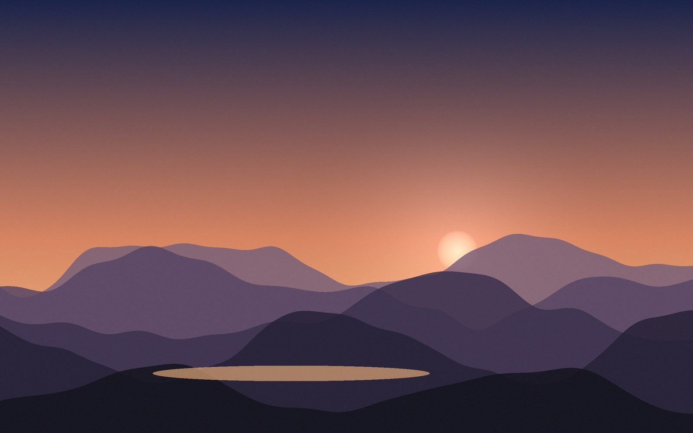

Trekking
A winter night on Kalsubai
Ashutosh Shinde ·
The highest point of Maharashtra by headtorch, a night of wind at the summit temple, and a sunrise that made every frozen finger worth it. (A demo story, written in Google Docs, to show how a post looks.)
We left Bari at four in the afternoon, later than we meant to, with too much tea in us and not enough daylight ahead. Kalsubai is only 1646 m, but it is the roof of Maharashtra, and in January the roof is windy.
Up the ladders
The first hour is fields and a small stream, then the trail tilts up and stays tilted. Where the rock gets steep there are iron ladders bolted into it, cold enough by evening that you feel them through your gloves. We counted the rungs for a while and then gave up counting anything except breaths.
By the time the last ladder was behind us the sun had dropped into the haze over the Sahyadri. The headtorches came out, and the world shrank to a circle of light, the next rock, and the boots of whoever was in front.
The night at the top
The summit is a small flat with the Kalsubai temple on it, and that night it was ours and the wind’s. We pitched the tent behind a low wall, cooked noodles that were cold before they were finished, and lay outside for as long as we could bear it, watching the stars.

Nobody slept much. The tent flapped like a flag all night, and every hour someone checked whether the others were still alive.
Sunrise
At six the sky to the east went from black to blue to orange, and the ridges came out one behind another, each a little paler than the last, with Bhandardara lake lying in the valley below like a dropped coin. Someone said “worth it”, and nobody argued.

We were down at Bari by ten, eating poha at the first stall we found, already planning the next one.
What we carried
Headtorch, and spare batteries (the cold eats them)
Two pairs of gloves: one for the ladders, one dry for the night
A stove, noodles, and far too much chikki
This is a demo post. It was written in Google Docs to show how a story looks on the site, and lives in your Drive folder WildQuant website / Blog. Edit it there and the page changes a few minutes later; delete it when you publish your own.